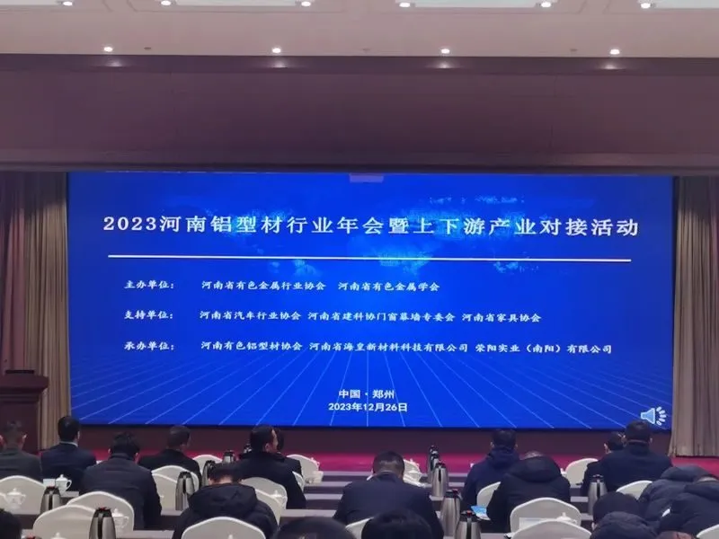
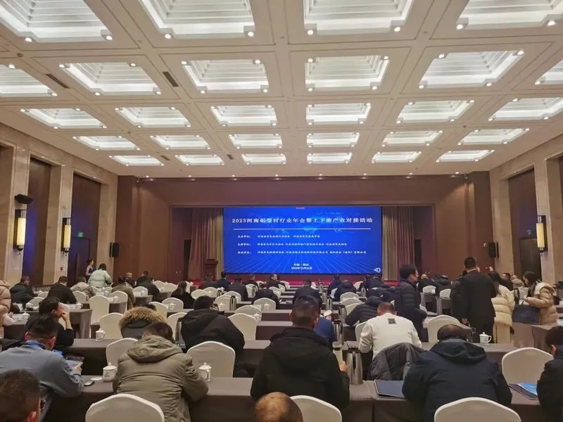
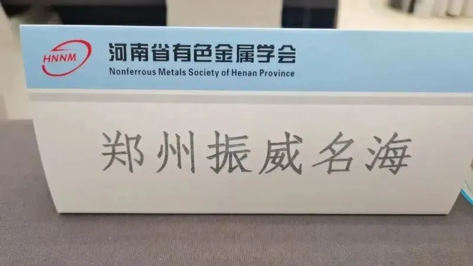
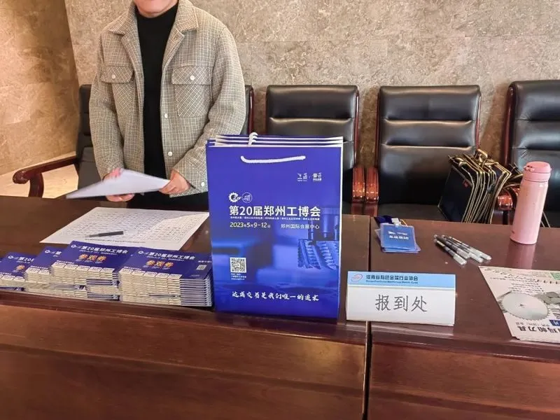
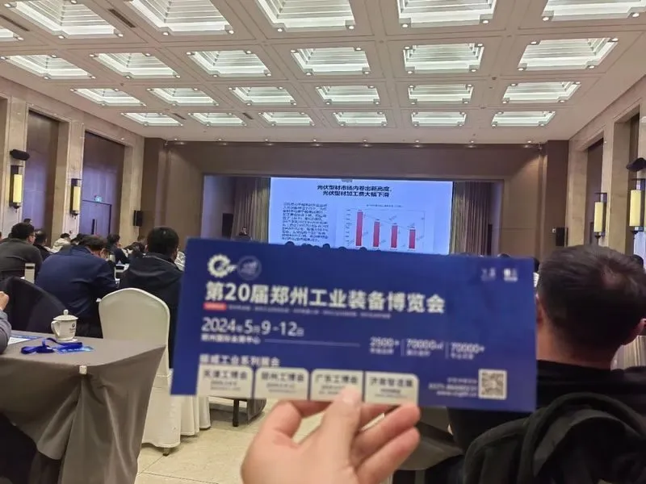
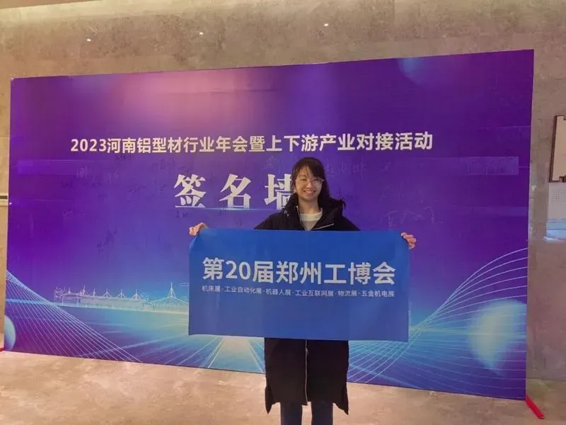
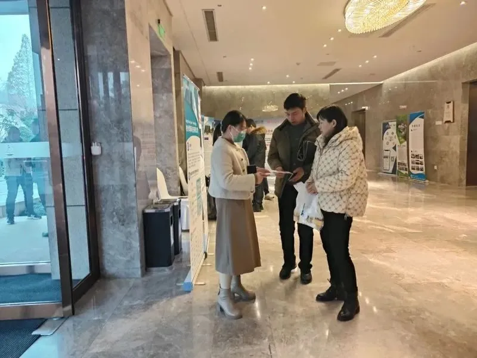
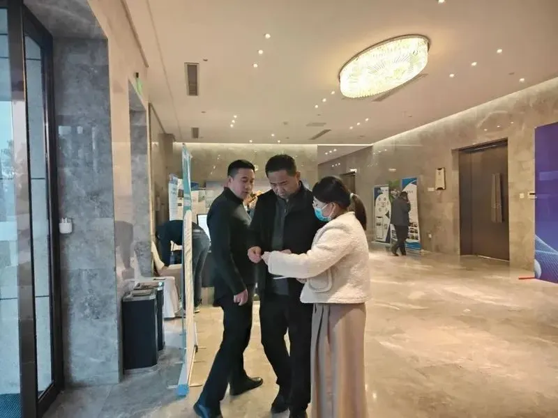
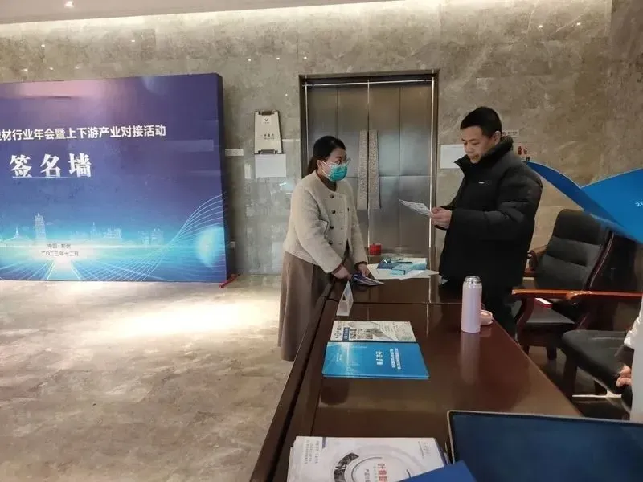

汇聚资源 | 郑州工博会受邀参加2023河南铝型材产业年会暨上下游产业接活动
首页 / 汇聚资源 | 郑州工博会受邀参加2023河南铝型材产业年会暨上下游产业接活动
铝型材产业是河南省28个千亿级重点产业链中——先进铝基材料产业链的重要组成部分，是实现《河南省培育壮大先进铝基材料产业链三年行动方案》的主要抓手。
12月26日，由河南省有色金属行业协会、河南省有色金属学会主办的2023河南铝型材产业年会暨第二届中原铝型材上下游对接研讨会在郑州市河南饭店圆满召开。

本次会议汇聚政府及相关协会领导、特邀专家以及铝型材、汽车、光伏、高端门窗等企业领导和技术经理、采购经理，铝型材企业挤压、表面处理等技术人员齐聚一堂共同探讨行业形势、新技术应用等热点议题，同期为河南铝型材行业领航企业、企业颁奖授牌并举办铝型材上下游企业（门窗、光伏、轻量化等）供需对接活动，切实推动河南省铝型材产业上下游互动和行业技术交流。
河南省工业和信息化厅材料工业处副处长高现林，河南省有色金属行业协会总工程师张传合、监事长刘涛，河南省家具协会会长唐吉玉、秘书长刘艳明，河南省建科协副秘书长尹先伟，河南省汽车行业协会副秘书长李金保，河南省门窗幕墙专委会主任宋钧声，河南有色铝型材协会会长蒋和云、执行会长王永庆，河南省新材料集团总经理李亚敏，兴发铝业（河南）公司总经理廖佩坤，郑州明泰交通新材料有限公司朱志扬等行业同仁共180余人参加会议。

郑州振威名海受邀参与本次会议，郑州工博会观众组织部负责人王孟与河南有色铝型材协会秘书长杨宏坤介绍当前郑州工博会情况，后续也将对展会进一步深化交流、增强联动、促进合作。




现场和明泰交通、辉龙铝业、诚品铝业、万基铝业、天鹅铝业、恒美铝业、骏鑫铝业等企业代表、行业内人士沟通交流、探讨合作，并组织邀请参加5月9-12日郑州工博会。



文章部分内容来源于河南省有色金属协会